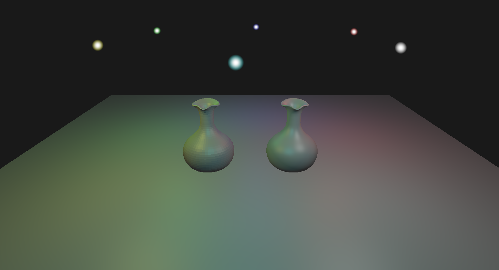

Introduction
The Vulkan Renderer is a personal project developed during my Master's.
The main focus of the project is to learn the Vulkan API,
gain a better understanding of rendering at a low level and improve my C++ skills.
Another focus is for me to be able to read and understand the vulkan documentation to be able
to implement my own features in the renderer and hopefully use this in my thesis project in Master's.
Project Structure and Implemented features
Using C++ and the Vulkan API,
I have implemented various graphics and optimisation features. The base of the renderer was made with
the help of the Vulkan tutorial. Other features were implemented completely by me using the Vulkan Official
Documentation.
Libraries / Extensions:
- Vulkan SDK/Library
- GLFW / Window Creation
- GLM / Vectors and Matrices
- SPDLOG / Better debugging and logging
- IMGUI / Imgui window
- TINYOBJLOADER / Loading .obj models
Using Cmake for building the project.
Engine Structure:
- Vulkan Instance
- Physical Device / GPU
- Logical Device
- Host / CPU
- Swap Chain
- Dynamic Rendering
Added Dynamic Rendering to replace the old way of using renderpasses and framebuffers, allowing
for a more intuitive, efficient and flexible implementation. (Only possible in Vulkan 1.3+)
Engine Implementation Features:
- Dynamic Window resizing
- Vertex / Index / Staging / Uniform Buffers
- Push Constants
- Descriptors
Shader Stage / Features:
- Vertex Shader
- Fragment Shader
Future Shader Implementations:
- Geometry Shaders
- Tessellation Shader
- Compute Shaders
Shader Implementations:
- Blinn Phong Lighting model
- Billboards (for the light sources visual)
- Multiple Lights
- Alpha Blending and Transparency

Summary
Technical Skills Demonstrated
- Understanding of the Vulkan API
- Cmake project structure
- Version Control through Github
- Debugging with RenderDoc
Future Goals:
(Project is still in devlopment)
- Explore more shader stages and pipelines (Geometry, Tessellation, Compute Shaders/Pipeline)
- Shadow Mapping
- Textures (currently working on it)
- Imgui Implementation (currently working on it)
- Physical based rendering
- Entity Component System
- LOD model generator
- Ray Tracing Pipeline
- Deferred Rendering
Back to main page